기사님끼리 일감을 맡기고, 대신 뛰어 주는 기능입니다. 수수료는 없습니다.
화물운송 종사자격증자격증이 등록된 기사님만 일감에 지원하거나 제안을 받을 수 있습니다. 등록이 안 되어 있으면 사무실에 말씀해 주세요.
돈은 직접 주고받지 않습니다배차 확정된 품앗이는 러너 정산에 자동으로 들어갑니다. 자세한 건 7번을 보세요.
배송지코드·연락처는 확정된 기사님만공동현관 번호 같은 정보는 배차 확정된 기사님에게만 보입니다.
맡길 일을 올리면 다른 기사님이 지원합니다. 통화 후 한 분을 확정합니다.
일하고 싶은 날을 표시하면 맡길 기사님이 제안을 보냅니다. 수락하면 바로 확정됩니다.
기사앱 첫 화면에서 품앗이를 누릅니다. 빨간 숫자는 새로 올라온 일감 수입니다.
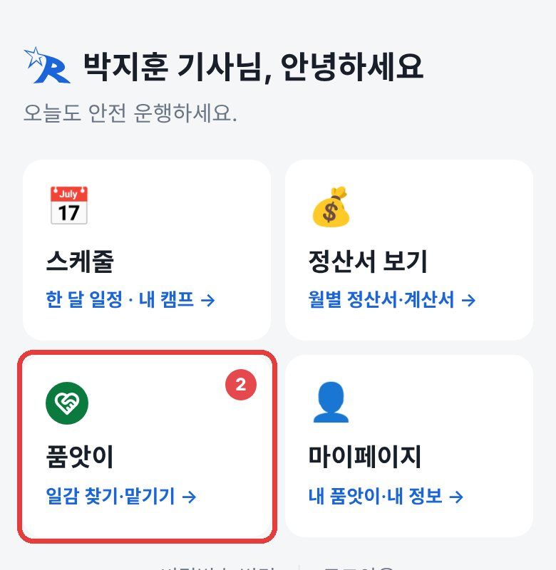
새 일감·지원·제안이 생기면 화면 위에 알림이 뜹니다. 휴대폰 알림을 켜 두면 앱을 닫아도 받을 수 있습니다.
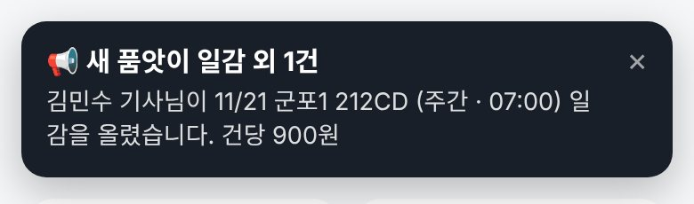
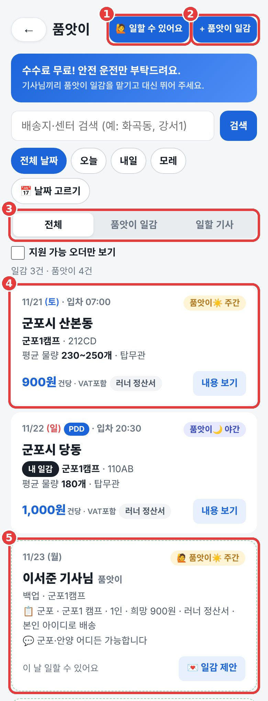
다른 기사님이 올린 일을 대신 뛰는 순서입니다.
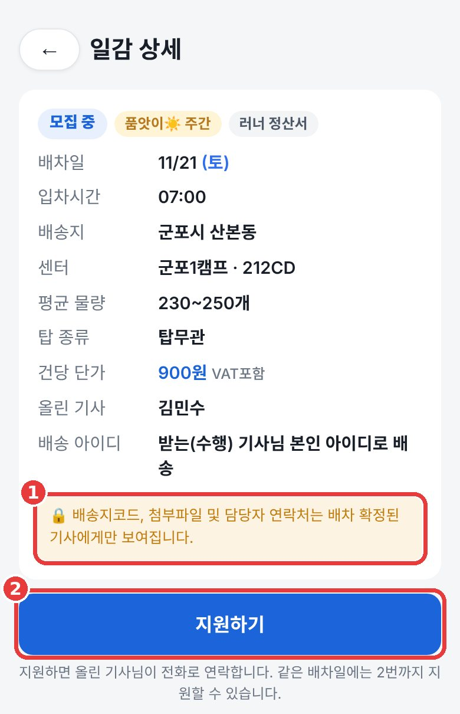
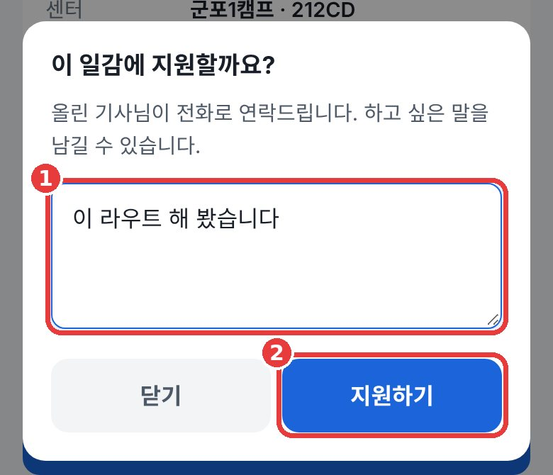
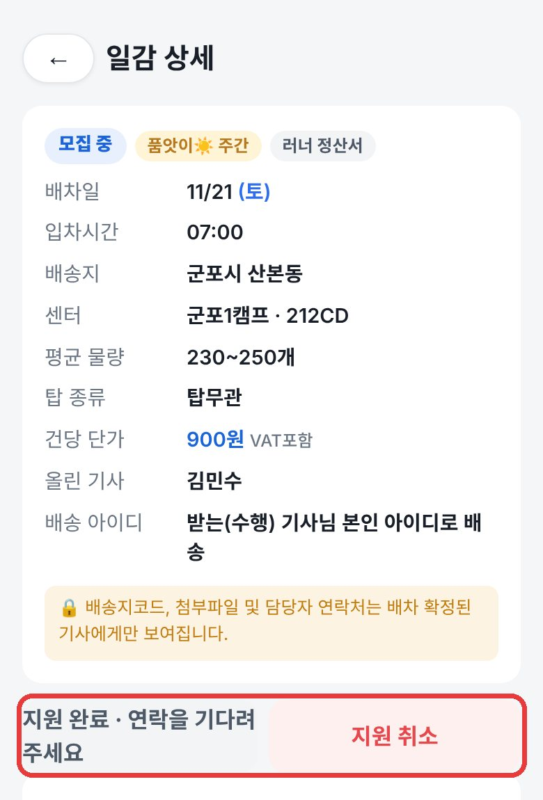
올린 기사님이 전화로 연락합니다. 마음이 바뀌면 확정 전에 지원 취소를 누르세요.
목록 맨 위에 초록 테두리로 내가 맡은 품앗이가 보입니다.
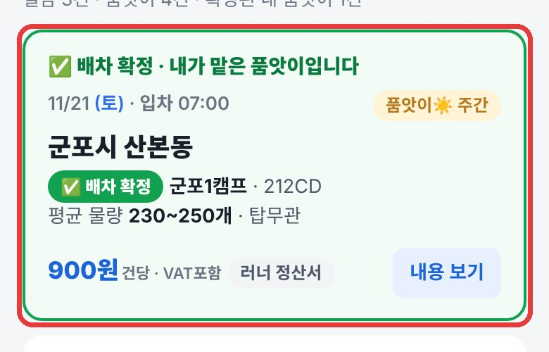
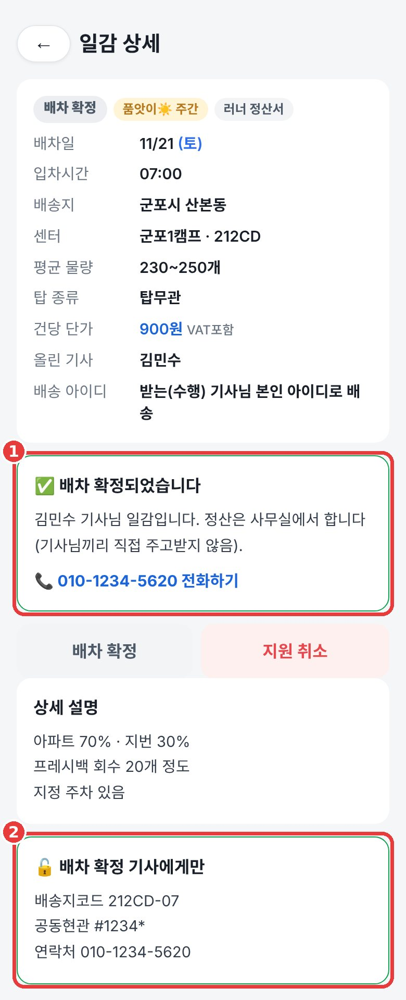
내 노선을 다른 기사님에게 맡기는 순서입니다.
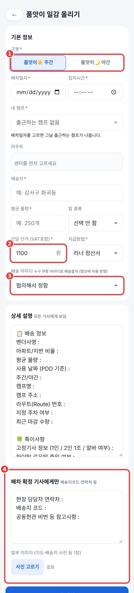
지원이 오면 알림이 옵니다. 마이페이지 → 내가 올린 일감에서도 볼 수 있습니다.
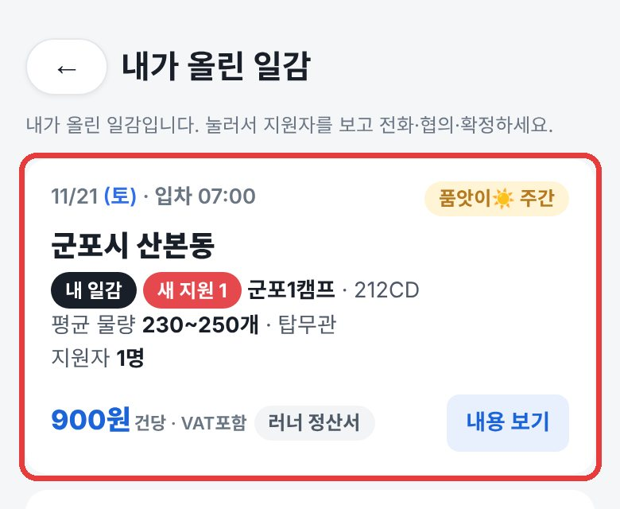
카드의 내용 보기를 누르면 아래쪽에 지원자가 나옵니다.
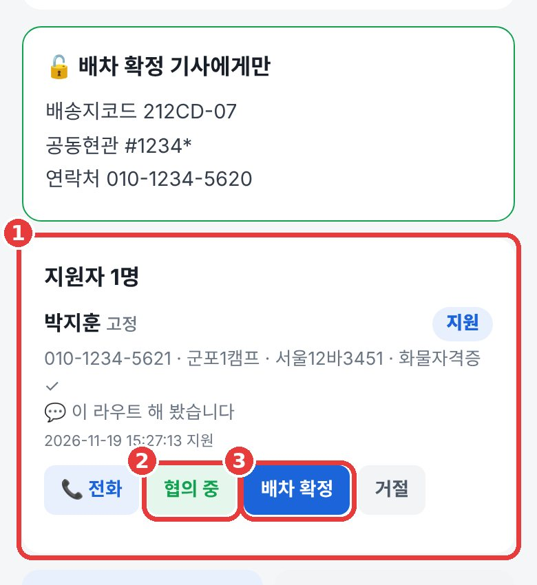
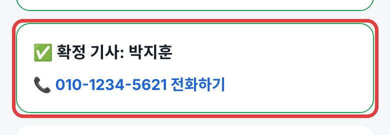
확정한 기사님 이름과 전화번호가 위에 표시됩니다. 사정이 생기면 확정 풀기로 되돌리거나 일감 취소를 누르세요. 더 이상 지원을 받지 않으려면 모집 마감을 누릅니다.
쉬는 날 일하고 싶으면, 일할 수 있는 날을 달력에 표시해 두세요. 맡길 기사님이 보고 제안을 보냅니다.
품앗이 화면 위의 🙋 일할 수 있어요를 누릅니다.
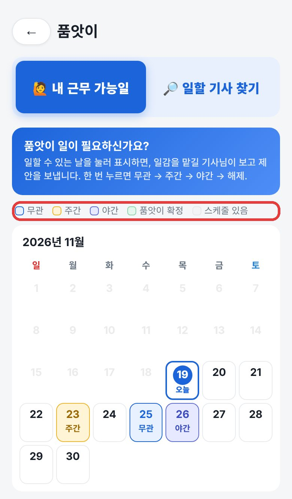
날짜를 누를 때마다 무관 → 주간 → 야간 → 해제 순서로 바뀝니다. 이미 스케줄이 있는 날은 고를 수 없습니다.
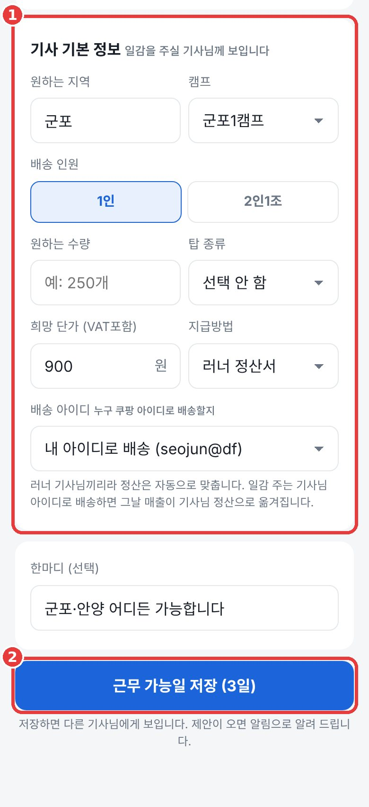
목록에서 점선 카드(일할 기사)의 💌 일감 제안을 누릅니다.
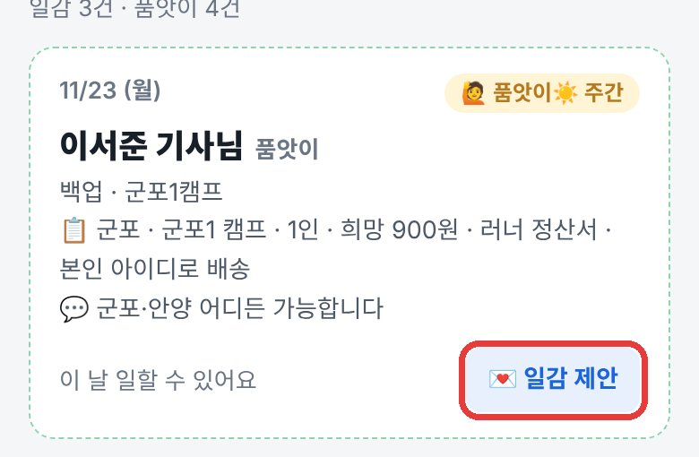
일감 올리기와 같은 화면이 나옵니다. 날짜와 기사님 희망 조건이 미리 들어가 있습니다. 내용을 확인하고 제안 보내기를 누르세요.
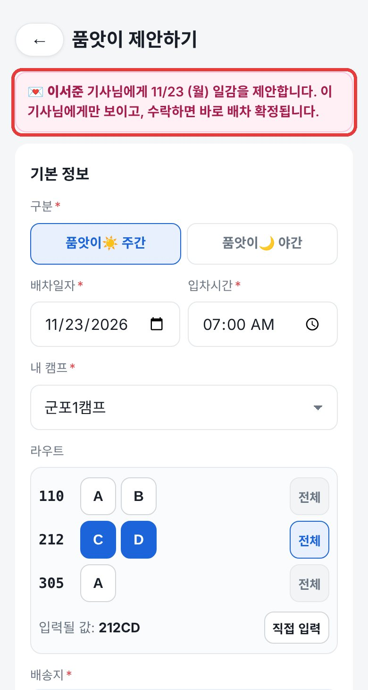
제안이 오면 알림이 뜹니다.
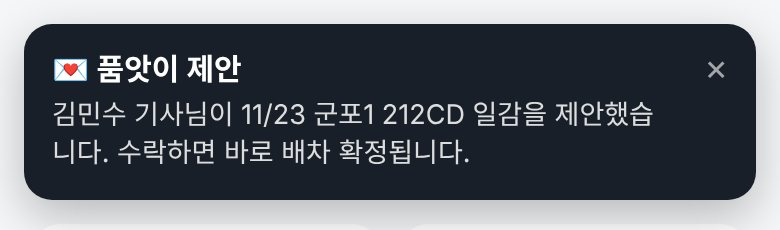
품앗이 목록에서 💌 나에게 온 제안 카드를 엽니다.
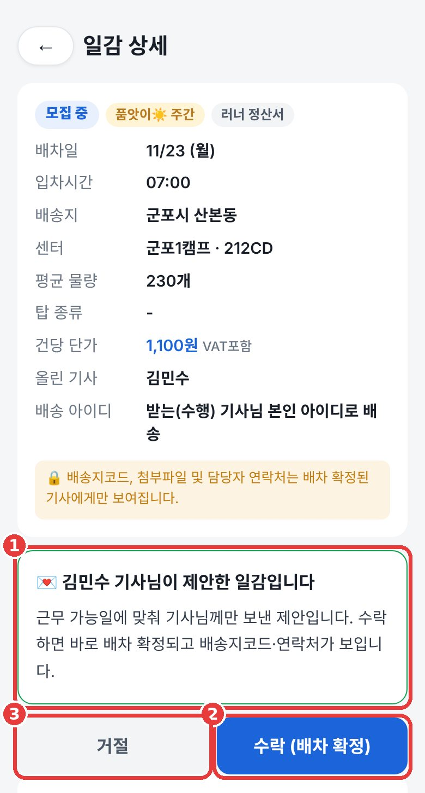
배차 확정된 품앗이는 스케줄 달력에 자동으로 들어갑니다.
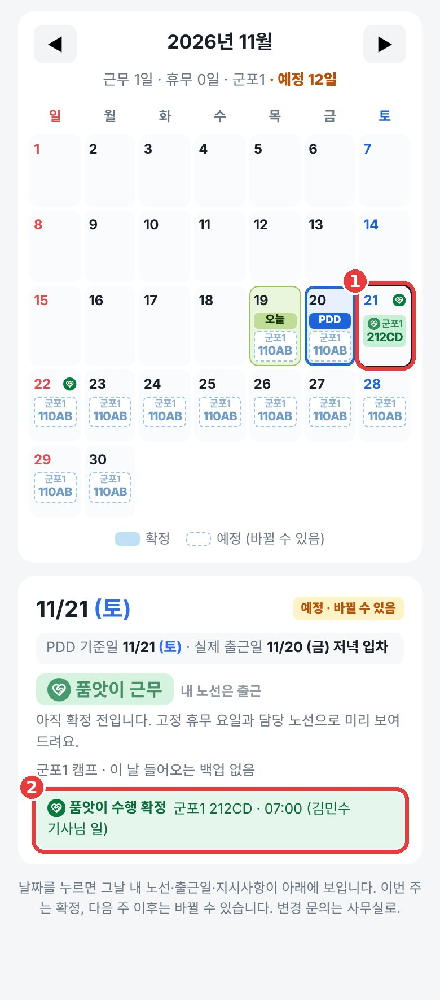
내가 맡긴 날은 품앗이 맡김 → 받은 기사님으로 표시됩니다.